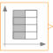
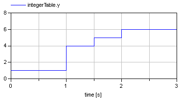
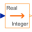

IntegerTableGenerate an Integer output signal based on a table matrix with [time, yi] values |

|
Diagram
{kind=link}
Information
This information is part of the Modelica Standard Library maintained by the Modelica Association.
This block generates an Integer output signal by using a table. The time points and y-values are stored in a matrix table[i,j], where the first column table[:,1] contains the Real time points and the second column contains the Integer value of the output y at this time point. The table interpolation has the following properties:
- An assert is triggered, if no table values are provided, if the time points are not strict monotonically increasing, or if the second column of the table matrix does not contain Integer values.
- Values outside of the table range, are computed by
extrapolation according to the setting of parameter extrapolation:
extrapolation = 1: Hold the first or last value of the table, if outside of the table scope. = 2: Extrapolate by using the derivative at the first/last table points if outside of the table scope. (This setting is not suitable and triggers an assert.) = 3: Periodically repeat the table data (periodical function). = 4: No extrapolation, i.e. extrapolation triggers an error - If the table has only one row, no interpolation is performed and the table values of this row are just returned.
- Via parameter shiftTime the curve defined by the table can be shifted in time. The time instants stored in the table are therefore relative to shiftTime.
- If time < startTime, no interpolation is performed and zero is used as ordinate value for the output.
Example:
table = [ 0, 1;
1, 4;
1.5, 5;
2, 6];
results in the following output:

Parameters (4)
| table |
Value: fill(0, 0, 2) Type: Real[:,2] Description: Table matrix (first column: time; second column: y) |
|---|---|
| extrapolation |
Value: Modelica.Blocks.Types.Extrapolation.HoldLastPoint Type: Extrapolation Description: Extrapolation of data outside the definition range |
| startTime |
Value: -Modelica.Constants.inf Type: Time (s) Description: Output = 0 for time < startTime |
| shiftTime |
Value: 0 Type: Time (s) Description: Shift time of first table column |
Connectors (1)
| y |
Type: IntegerOutput Description: Connector of Integer output signal |
|---|
Components (2)
| combiTimeTable |
Type: CombiTimeTable |
|
|---|---|---|
|  | realToInteger |
Type: RealToInteger |
Used in Examples (1)
|
Modelica.Blocks.Examples Demonstrates the usage of blocks from Modelica.Blocks.Interaction.Show |